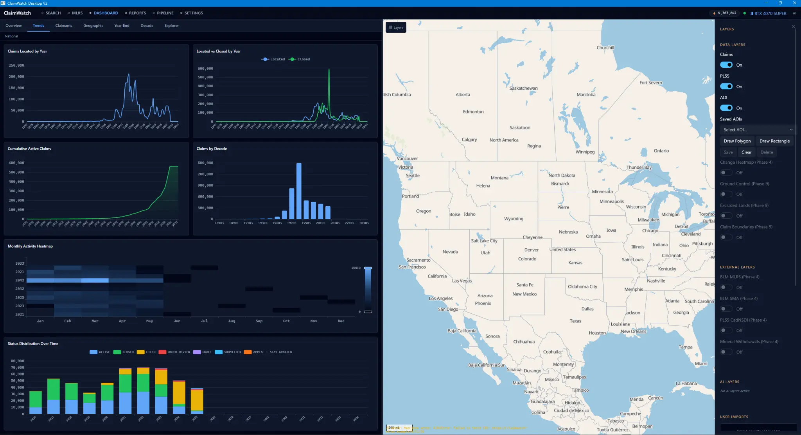
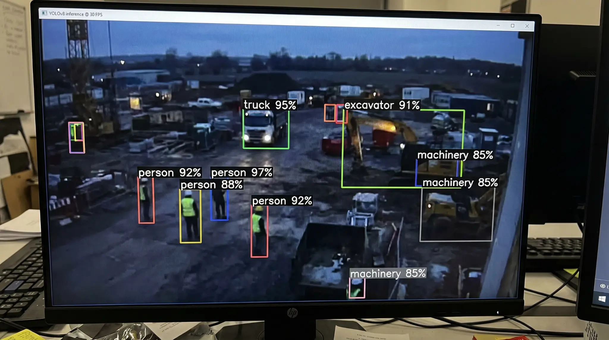
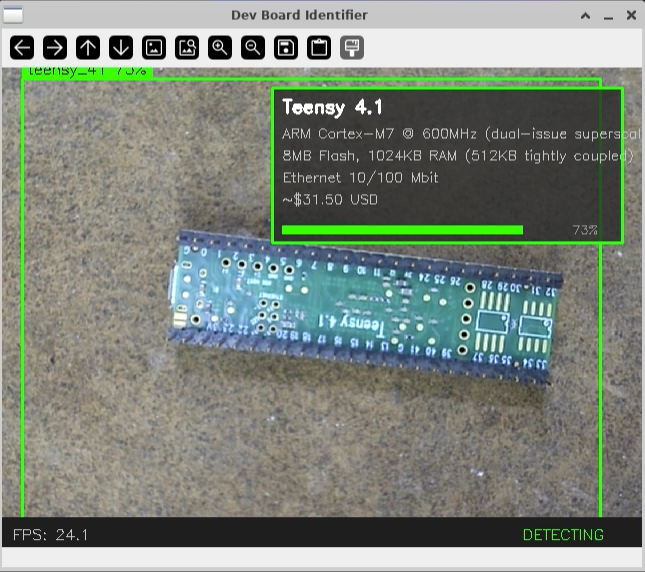
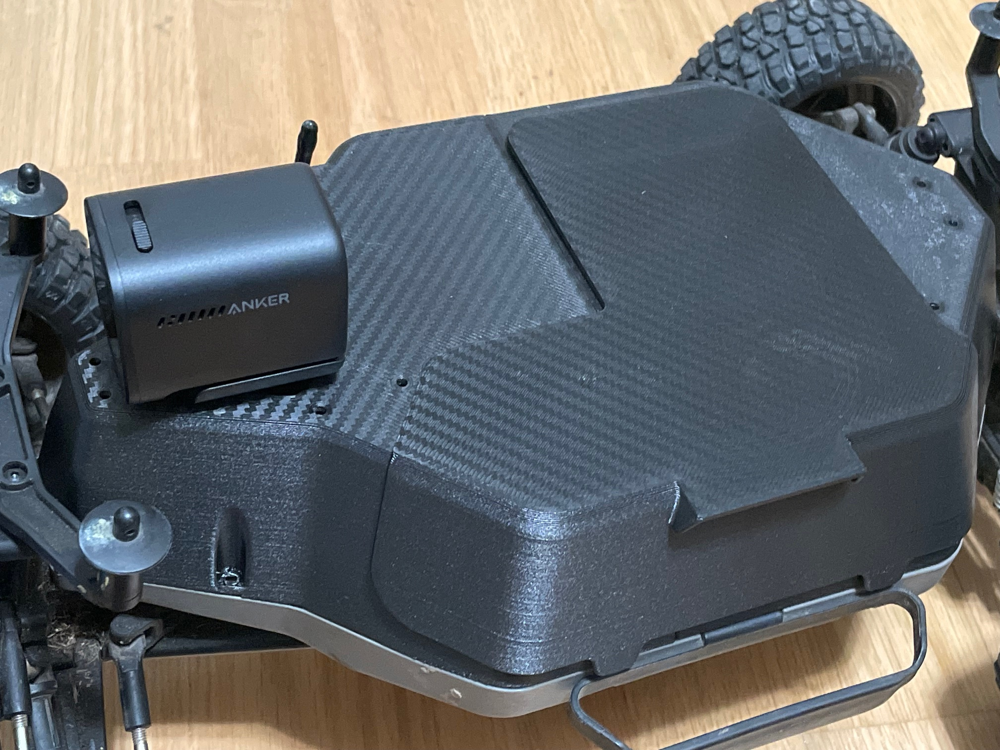

Pipelines
AI Pipelines & MCP
Data ingestion, tool routing, human approval loops, ShepherdMCP.ai-style MCP servers, and agent workflows that connect apps, files, APIs, and models.
Full-stack AI · Lafayette, LA
From Model to Metal.
Gerdsen AI turns fragmented workflows into operator-ready systems: software, retrieval, agents, MCP servers, computer vision, robotics, and field deployment.
Scroll to explore
Connection layer
The scope is broad because the systems are broad, but delivery stays concrete: operator software, AI pipelines, grounded knowledge systems, and edge deployment patterns that fit your real stack.
AI Stack
Gerdsen AI builds AI pipelines and MCP server integrations for ChatGPT and Chat GPT workflows, local Ollama and Qwen deployments, GIS and ArcGIS data paths, ROS2 robotics, RAG/vector databases, computer vision, and edge AI.
Pipelines
Data ingestion, tool routing, human approval loops, ShepherdMCP.ai-style MCP servers, and agent workflows that connect apps, files, APIs, and models.
Model runtimes
ChatGPT tool surfaces, OpenAI-compatible app flows, Ollama local inference, Qwen and QWEN model workflows, and private runtime deployment choices.
Spatial systems
GIS and ArcGIS data workflows, map-adjacent automation, document-to-location pipelines, and AI-assisted analysis for spatially grounded operations.
Robotics & vision
ROS2 integration, computer vision, NVIDIA Jetson, TensorRT optimization, sensor workflows, and deployable edge runtimes for real systems.
Product systems
Product messaging, workflow architecture, and reusable AI engineering assets for technical delivery teams.
Domain alignment
Consistent language across related AI, MCP, workflow, and deployment properties while keeping each site and product surface distinct.
What We Build
The strongest fit is a team that wants one hands-on partner to connect the stack, remove manual work, and ship the operating layer around AI.
End-to-end systems for data ingestion, preprocessing, model serving, inference loops, RAG architectures, and monitoring. From prototype to production deployment.
Custom Model Context Protocol servers that give LLMs structured access to tools, APIs, files, and data sources across Claude, ChatGPT, and open-source model ecosystems.
Domain-specific model training using SFT, GRPO, DPO, and custom dataset creation. Embedding models, vision-language models, and instruction-tuned chat models for specialized applications.
Production CV for inspection, quality control, depth estimation, object detection, multi-sensor fusion, and real-time edge inference.
NVIDIA Jetson deployment, TensorRT optimization, on-premise inference servers, sensor-network integration, and bandwidth-constrained runtime patterns.
Technical roadmapping, architecture review, build-vs-buy analysis, vendor evaluation, and AI readiness assessment for organizations starting or scaling their AI adoption.
Applied Systems
These snapshots show the working path from operator desktop software to live computer vision and embedded board identification.

Desktop apps
Operator-focused desktop software with dashboard analytics, map-based workflows, and production data tools.

Computer vision
Real-time object detection workflows for safety, operations monitoring, and edge inference on active job sites.

Embedded vision
Computer-vision assisted board identification for hardware inventory, validation, and bring-up workflows.
How We Work
Partnerships are preferred, but the delivery model stays consistent: map the system, build the connective layer, and deploy against real constraints.
Map the workflow, data, users, constraints, and value of automation.
Choose models, tools, APIs, storage, deployment targets, and review loops.
Ship usable software with tests, instrumentation, and real data paths.
Move the system into cloud, local, on-prem, or edge environments.
Track quality, latency, failure modes, feedback, and model drift.
Public Proof
Open Robotics highlighted Gerdsen AI's Depth Anything 3 ROS2 wrapper. The DA3 repo is public and usable.
The same workflow pattern extends to field robotics: camera ingestion, depth inference, ROS2 transport, and deployable edge runtime behavior.

Custom ROS2 build + public proof
The DA3 wrapper connects ByteDance's Depth Anything 3 model to ROS2 robotics and perception stacks.
View RepositoryContact
When AI must connect, deploy, and hold up in production, start with Gerdsen AI. Tell us what must connect, who will use it, and where the AI needs to run.
Call, text, or email away when the work is moving fast.
Lafayette, Louisiana. Serving clients nationwide.
Desktop, local, cloud, edge, or hybrid systems depending on privacy and deployment needs.
Projects are usually scoped around operator workflow, deployment constraints, and what must stay private or local.
Start the conversation
You'll get a direct response with next steps, not a generic intake loop.